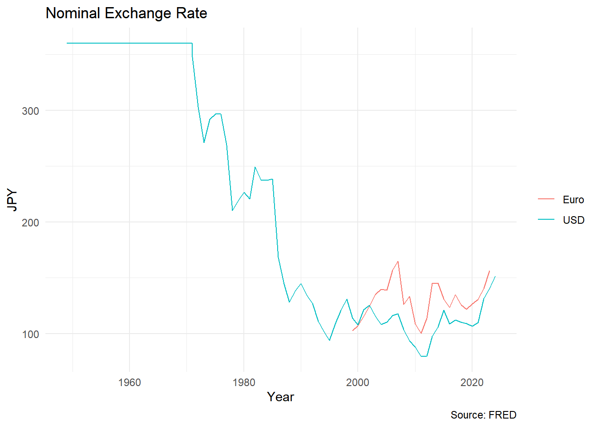
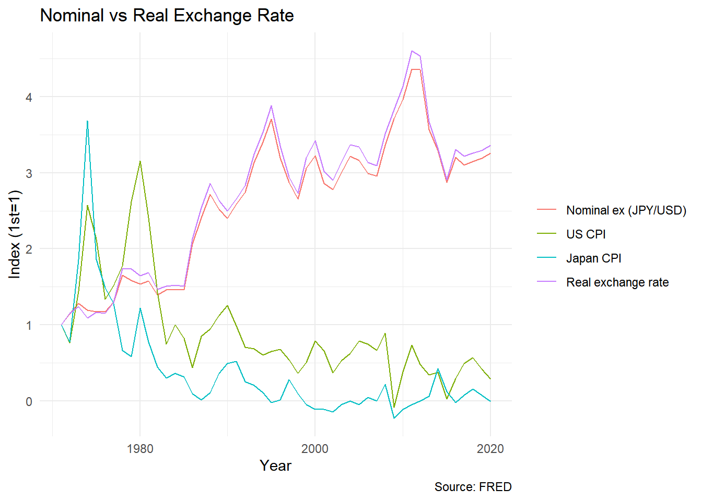
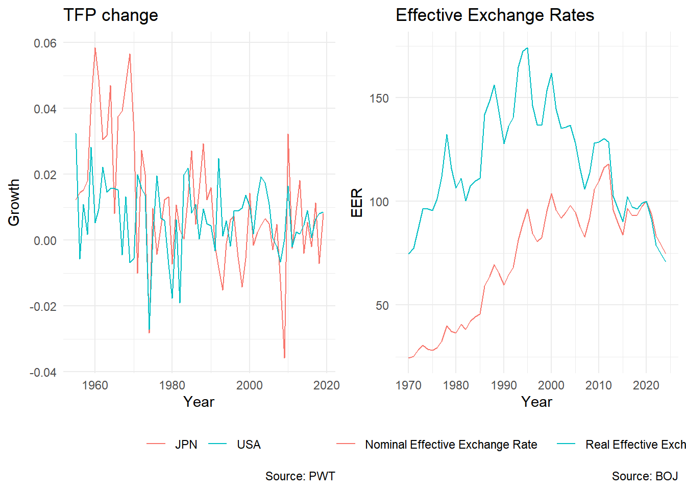
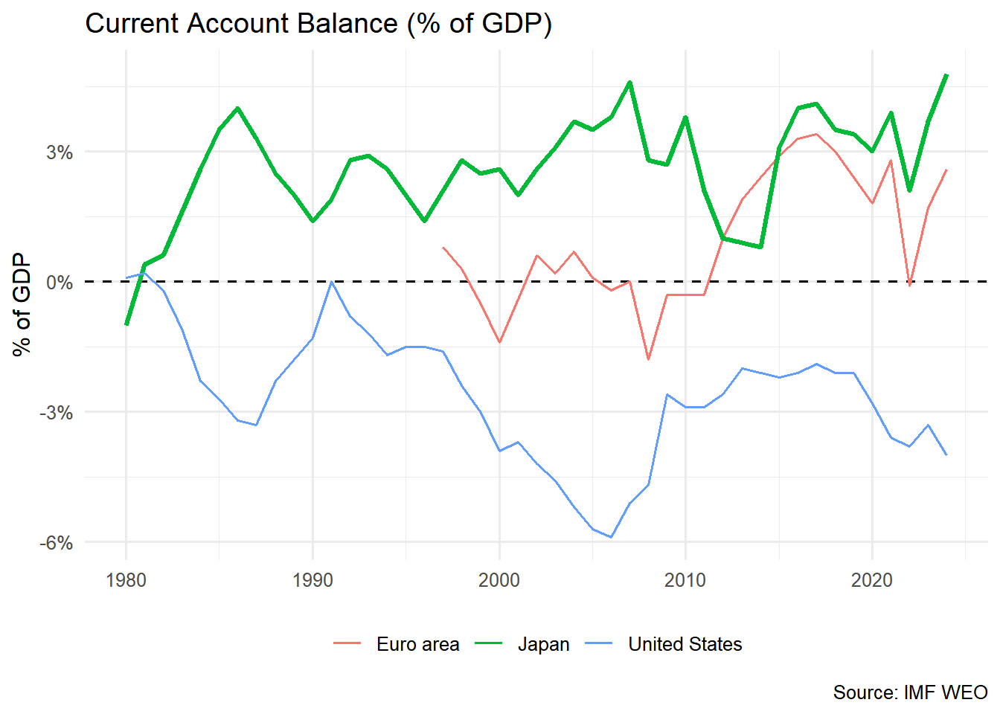
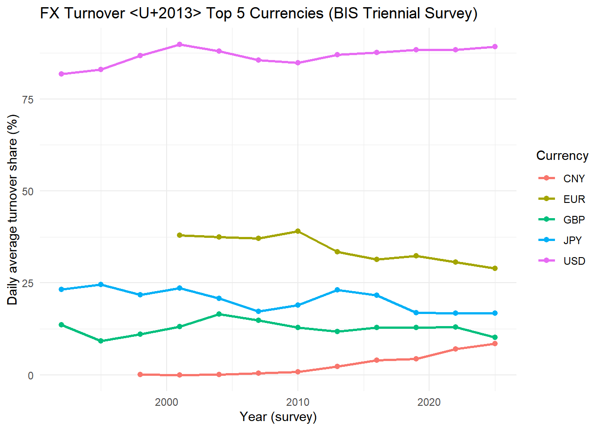
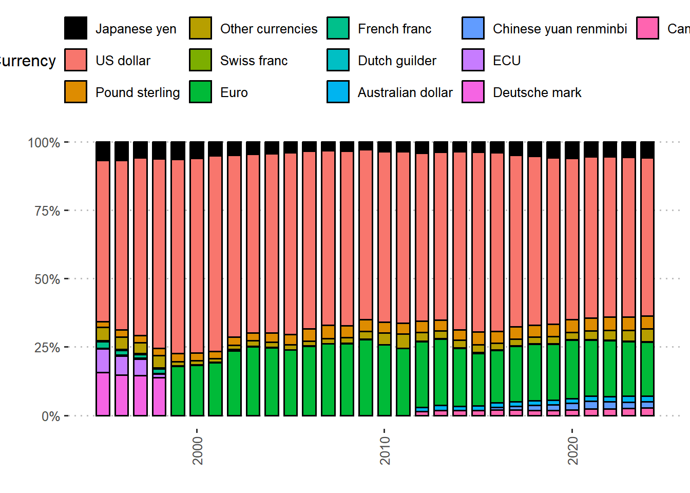

Exchange Rate and Competitiveness
Introduction
Exchange Rate is relative price of two currencies
Competitiveness:
- devaluation (fixed regime)
- depreciation (floating regime)
Bretton Woods system
Competitive devaluation in the 1930s
After WWII
- tied to USD, then to gold
- 360 yen/dollar: 1949-1971
Trade balance mirrored balance in foreign reserves: costly to maintain fix exchange rates
- trade deficits means lack of foreign reserves, leading to reduce imports and could hurt the economy
- USD devaluation then to main fix exchange rates, Yen needs devaluation, buying USD and selling Yen
Floating Regimes
Issues with the fixed systems:
- Slow adjustment of the rate to changes in fundamentals
- US trade deficit: USD abroad outweight US’s gold reserve
US suspended the convertibility of the dollar in 1971 and devaluated the dollar in 1973
Misalignment: level where trade account balances
- USD overvalued but JPY and German mark undervalued: Japan’s and Germany’s productivity growth was higher than that of the US
- As capital controls were lifted in the second half of the 1970s and 1980s in Japan, capital flows became more important factors that influence the exchange rate
Exchange rate movement
- During 2000, the USD/JPY moved little, the yen appreciated against the euro: depreciation of the euro against both the dollar and yen.
Purchasing power parity (PPP)
\[ S^{real}_t (USD/JPY) = S^{Nom}_t \times \frac{P_{JP,t}}{P_{US,t}} \] - If the purchasing power of a currency is the same between two countries, the real exchange rate becomes 1: the purchasing power parity (PPP) holds in absolute terms.
- The real exchange rate is the relative price of foreign goods: a measure of competitiveness of exports and imports.
- 1 USD = 100 JPY, 1 USD = 1 apple, 100 yen = 1 apple
- US inflation 100%: 2USD = 1 apple, real ex 100/(2/1)=50 JPY
- Japan inflation 100%: 200 yen = 1 apple, real ex 100*(2/1)/1=200 JPY
- Both inflation: 100*(2/1)/(2/1) = 100 JPY
Nominal vs real exchange rate

- the main driver of the real exchange rate appreciation was nominal exchange rate appreciation
- higher gap in CPI diverge nominal and real exchange rates
Effective Exchange Rates
\[ NEER = \sum_{i}^{N} \omega_i S^{Nom}_{i.t} \] \[ REER = \sum_{i}^{N} \omega_i S^{Real}_{i.t} \]
NEER vs REER

- 73-95: despite the yen’s REER appreciation, trade surpluses were maintained as productivity growth
- 95~: despite lagged productivity growth, trade surpluses were maintained due to Japanese deflation, yen depreciation
Exchange rate and Trade/Investment
- effects on trade through the relative price of goods
- 2000s~: yen exchange rate as important factor for Japan’s competitiveness (Ito and Shimizu, 2015)
- effects on foreign direct investment
- reallocate production from Japan to Asia due to yen appreciation (Golderg and Klein, 1996)
Exchange Rate Dynamics
- long run: fundamentals (interest rates, money supplies, productivity growth)
- carry trade practice
- short-run: arrival of new information regarding these fundamentals (not the actual changes)
- interest rate declines: discourage capital inflows and encourage capital outflows: home currency depreciates
- low interest rate in yen by borrowing in yen and investing in a high-interest-rate currency: carry trade
- prevalent in Japan and the yen in the 1990s and 2000s, until interest rates in all advanced countries collapsed to near zero after the global financial
US Trade Deficit

Intervention
purchases or sales of foreign currencies in exchange for domestic currency by the monetary authorities to influence the level of the exchange rate
- domestic interest rate channel: sterilized intervention
- portfolio-balance channel: foreign vs domestic bonds
- signalling channel: collective action
fixed exchange rate system: constant intervention
flexible exchange rate system: less intervention
- trade deficits and capital outflows: raised domestic interests or devaluation currency
- unsterilized intervention: sell the foreign currency: expansion of money: interest rate declines: discourage capital inflows and encourage capital outflows: home currency depreciates
- less intervention: not effective with limited resources, US view on intervention as unfair trade policy
Intervention decisions

Japanese Intervention
- Intervention frequency declined over time
- Intervention sizes spiked in 1978, 1987, 1989, and 2003–04
- yen-selling interventions were more common than yen-buying
- authorities sold yen when it was strong/appreciating and bought yen when it was weak/depreciating
- Plaza Accord (1985): selling dollars/buying yen
- Lourve Accrod (1987): buying dollars/selling yen
- Abenomics and quantitative easing (2003-04): selling yen
Invoicing currency
- Share of yen-invoicing in Japan’s exports:
- US: 10–20%
- EU: 30%
- Asia: 40-50% (re-exported to US and EU)
- Share of yen-invoicing in Japan’s imports:
- US and Asia: 30%
- EU: 60%
Settlement Currency

Foreign Reserve Currency

References
- Ito and Hoshi (2020) Chapter 12
- Ito, K., & Shimizu, J. (2015). Industry-Level Competitiveness, Productivity and Effective Exchange Rates in East Asia. Asian Economic Journal, 29(2), 181–214.
- Linda S. Goldberg & Michael W. Klein, 1996. “Foreign direct investment, trade, and real exchange rate linkages in developing countries,” Proceedings, Federal Reserve Bank of San Francisco, pages 73-100.
- Song, C.-Y. (1997). The Real Exchange Rate and the Current Account Balance in Japan. Journal of the Japanese and International Economies, 11(2), 143–184.
- Toru Iwami (2025) “The Internationalization of Yen and Key Currency Questions”, IMF Working Papers 1994, 041 (1994)
- Data Link
- https://fred.stlouisfed.org/series/CPALTT01JPA657N
- https://fred.stlouisfed.org/series/CPALTT01USA657N
- https://fred.stlouisfed.org/series/AEXJPUS
- https://fred.stlouisfed.org/series/CCEUSP01JPA651N
- https://www.stat-search.boj.or.jp/ssi/cgi-bin/famecgi2?cgi=$nme_a000_en&lstSelection=FM09
- https://www.customs.go.jp/toukei/shinbun/tuuka.html